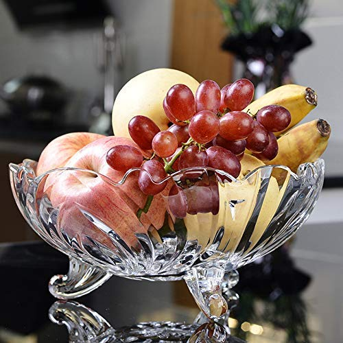
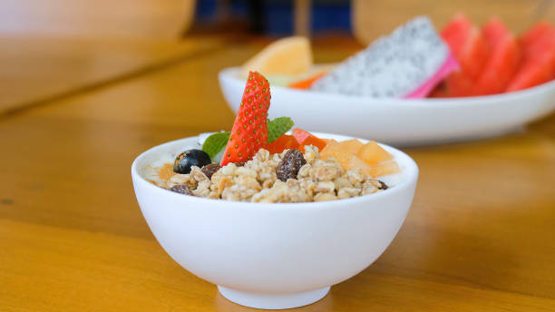

Healthy Eating Tips
Discover the secret to healthier lifestyle with our curated health tips and guides.

Eat More Fresh Fruits
Fruits are rich in vitamins, minerals, and antioxidants. They help keep ypur body and mind healthy and hydrated.

Maintain a Balanced Diet
A balanced diet includes a mix of vegetables, proteins, grains, and dairy. Make sure to have a variety of foods.

Choose Whole Foods:
Opt for whole, unprocessed foods whenever possible. These include fruits, vegetables, whole grains, and lean proteins.